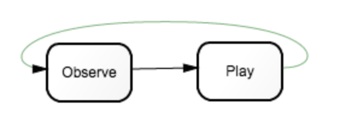
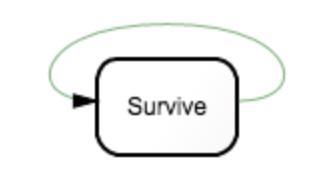
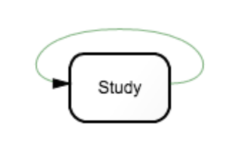
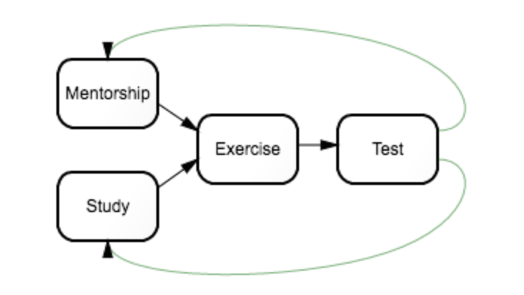
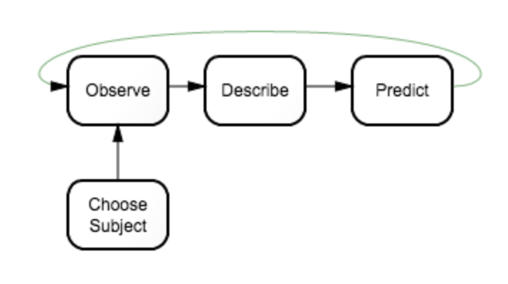
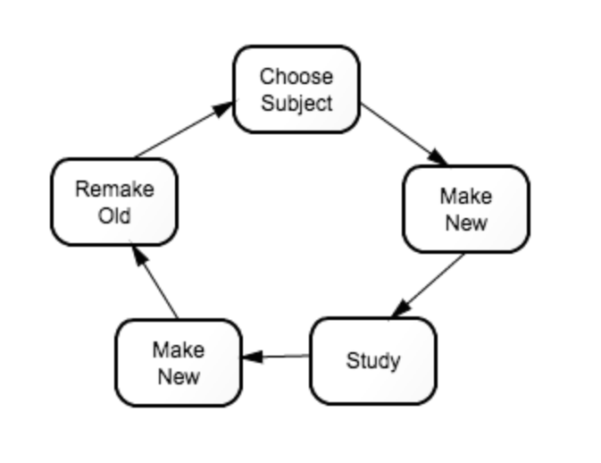

We Can Code Week 7: Learning Strategies
wolfram74.github.io/wcc_index.html
How many different ways can you learn?
How much time available?
Child

Adult

Armchair Expert

Student

Scientist

Crafter

No optimal strategy
Mix and blend
"Draw wisdom from many places. if you take it from only one place it becomes rigid and stale."